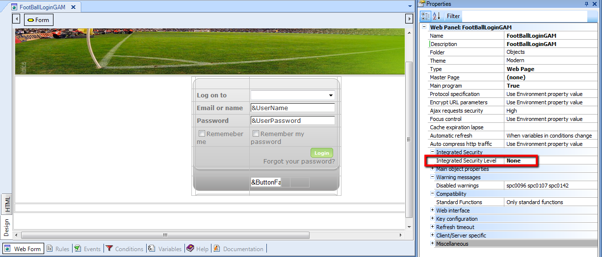
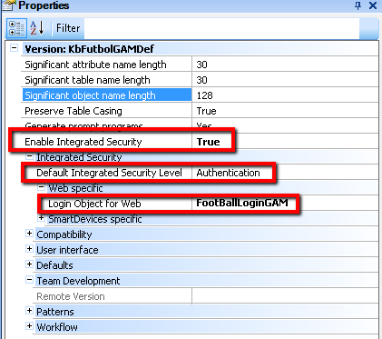
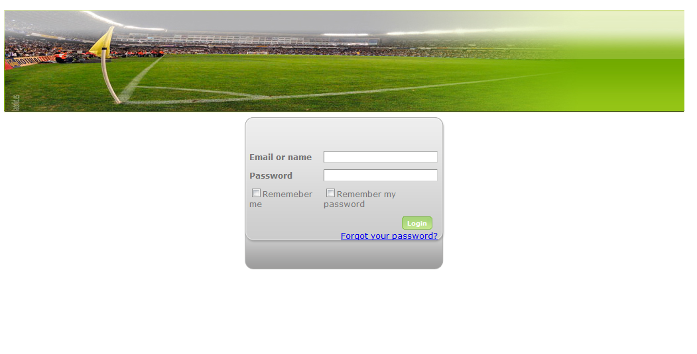

This is a basic sample, based on Lab Application. In this case, we´re interested in making all the application private, using GAM. Only authorized users will be able to acces the pages of this application. Steps to follow: 2. Run GAM Backoffice and define users and security policies for this application. See GAM Web Backoffice for more details. 3. Create a "login object" which will be displayed to the user when the security session expires or when it does not exist (or any other security failure happens). The easiest way to program this object is to make a "save as" of GAMExampleLogin Object (which is provided by GAM Examples) and make the necessary changes.  4. Define "FootballLoginGAM" as the login object. Set Login Object for Web Property = FootballLoginGAM. 5. Only authorized users will be able to access this application. Default Integrated Security Level Property has to be set to "Authentication" value, because all the objects of the KB will be secure.  6. Rebuild All, and only authorized users will access the webpanels of the application. The "login object" look&feel for this example is shown in the image:  See AlsoGAM Use Example: Public Application With Some Private Components
|
| Backlinks |
| GAM Authentication Scenarios |